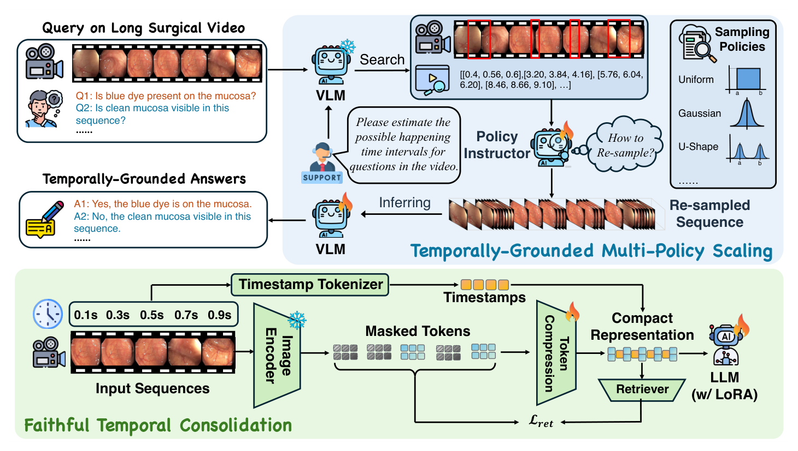
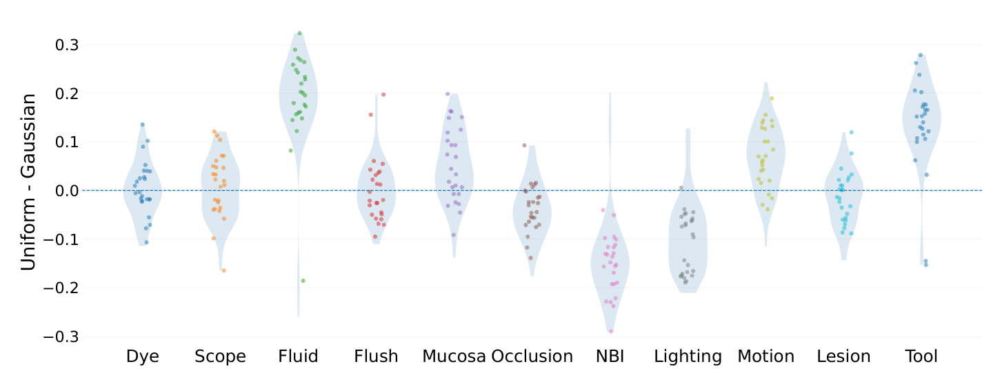
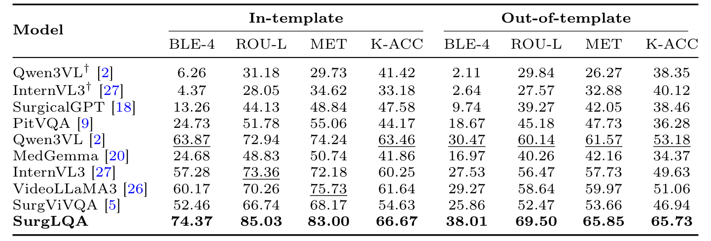
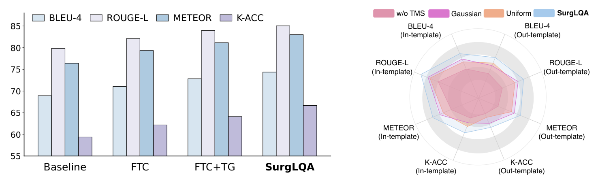
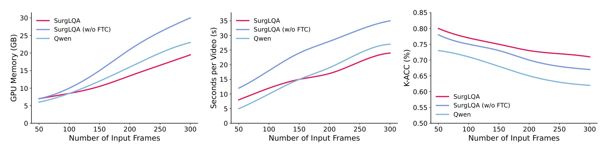

图文解读
1背景与动机
手术问答把自然语言和手术视频连起来，可以回答“现在在冲洗吗”“NBI 灯开着吗”这类问题。问题在于，已有工作几乎都停留在单张图像或几秒的短片段。
长视频带来两个难点。关键事件稀疏而短暂，均匀稀疏采样容易漏掉它；把所有帧都编码，词元量又会随时长失控。
作者想同时解决“怎么装下长视频”和“怎么在长视频里找到与问题相关的那几帧”。
2核心观点速览
做法是把一次推理拆成两步：先用压缩后的全视频回答“事件在哪”，再在那里加密采样回答“事件是什么”。
- 表示（FTC）：3D 卷积压缩视觉词元，每段前面插入写有秒数的文本词元，掩码检索损失约束压缩不丢细节。
- 取证（TMS）：模型先输出时间区间，BERT 指导器为每个区间挑一种采样分布，重采样后再作答。
- 结果：Colon-LQA 模板内 BLEU-4 为 74.37，最强微调基线 Qwen3VL 为 63.87。
边界： 视频只有约 34 秒，只有结肠镜，没有方差，数据还没公开。
先看评测数据，因为“长时程”这个词要放在数据实际有多长的背景下理解。
3数据：拼出来的长视频
Colon-LQA 把连续的结肠镜短片段按时间顺序首尾相接，再把各片段的问答对合并到同一个长视频样本里。另一个评测集 REAL-Colon-VQA 是已有的短片段基准。
论文给出的唯一规模信息是每个长视频约 34 秒。 样本数、问答对数、训练测试划分、问题类型分布，论文未说明，所以无法判断评测是否足够大、两套数据之间有没有片段重叠。
问题有 11 类，包括染色、冲洗、遮挡、NBI 光源、器械等，多是是非题。评测分模板内与模板外：后者把问题换了说法，检验模型是否只记住了措辞。
数据是拼接出来的，下一节看模型如何在这样的输入里取证。
4FTC：压缩但保留时间

视频先切成三维块，经多层 3D 卷积压缩。每个时间单元前插入“timestamp: t seconds”的文本词元，语言模型读到它就知道这段画面在何时。
为防止压缩只留下粗信息，训练时遮住部分压缩词元，让一个轻量检索器回推压缩前的特征：
$$\mathcal{L}_{\mathrm{ret}}=\sum_{i\in\mathcal{M}}\big\|[g(\mathrm{Mask}(Z_{\mathrm{FTC}}))]_i-z^{(1)}_i\big\|_2^2.$$
块大小、层数、压缩率和掩码比例，论文未说明。
5TMS：先定位，再按问题采样

图 3 是这套设计的依据：不同问题偏好不同分布。 流体、器械类问题在高斯采样下更好，NBI、照明类问题在均匀采样下更好。
推理时，模型先按追加指令输出事件可能发生的区间，取中心建窗口；BERT 指导器在高斯、均匀、密集、U 形中挑一种，在窗口内重采样，再送回模型作答。总损失是问答损失、检索损失和策略交叉熵的加权和，权重和指导器的标签来源论文未说明。
6结果说了什么

| 模型 | 模板内 BLEU-4 | 模板内 K-ACC | 模板外 K-ACC |
|---|---|---|---|
| SurgViVQA | 52.46 | 54.63 | 46.94 |
| VideoLLaMA3 | 60.17 | 61.64 | 51.06 |
| Qwen3VL | 63.87 | 63.46 | 53.18 |
| SurgLQA | 74.37 | 66.67 | 65.73 |
SurgLQA 八列全部第一。换了问法之后，关键词准确率的优势反而更大：模板外 K-ACC 比 Qwen3VL 高 12.55，模板内只高 3.21。REAL-Colon-VQA 上它同样八列第一，模板内 BLEU-4 为 87.69。

消融只有图。未定义的 Baseline 自身 BLEU-4 约 69，已经高于微调 Qwen3VL 的 63.87。 我的判断：主表上的 BLEU 优势有一大半在加模块之前就已存在，K-ACC 从约 59 到 66.67 的提升更能代表两个模块的作用。
数字说明“好多少”，下一节讨论它们不能说明什么。
7结果没说什么

- 不能说明实时可用。 300 帧时单视频约 24 秒，而视频本身约 34 秒；50 帧时 SurgLQA 约 8 秒，比 Qwen 的约 5 秒还慢。节省的主要是显存。
- 不能说明真正的长时程能力。 34 秒远短于动机里的数十分钟到数小时；拼接接缝还可能帮模型定位片段。
- 不能确认是选对了分布。 没有随机选策略的对照，增益可能只来自在窗口内加密采样。
- 图 6 的数据集不明。 50 帧时 K-ACC 约 0.80，与表 1 的 66.67 对不上；图例中 Qwen 的规模也未说明。
这些空白决定了复现时要先查什么。
8数据能否获取
作者仓库公开，但只放出了 Qwen3-VL 2B 的微调代码。说明文档写明训练数据和模型权重不放入仓库，路线图中长视频数据集与标注仍未完成。 Hugging Face 上也搜不到对应数据集。
想复用 Colon-LQA，目前只能按论文思路自己从短片段拼接，或等待作者发布。